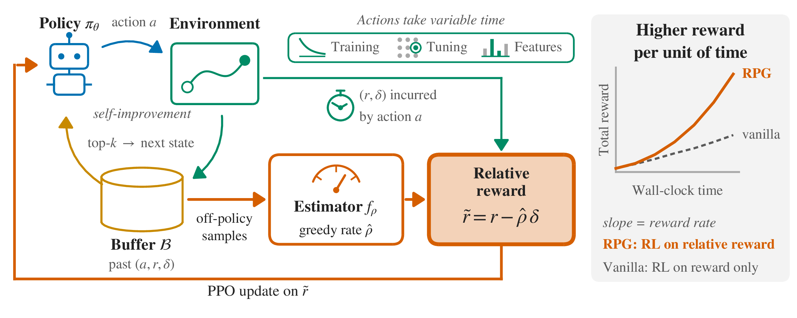
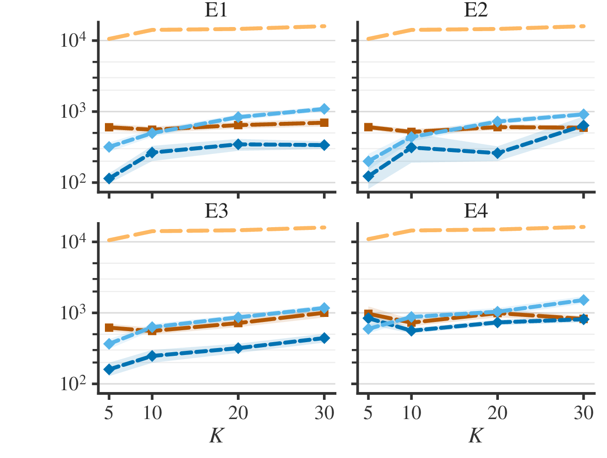
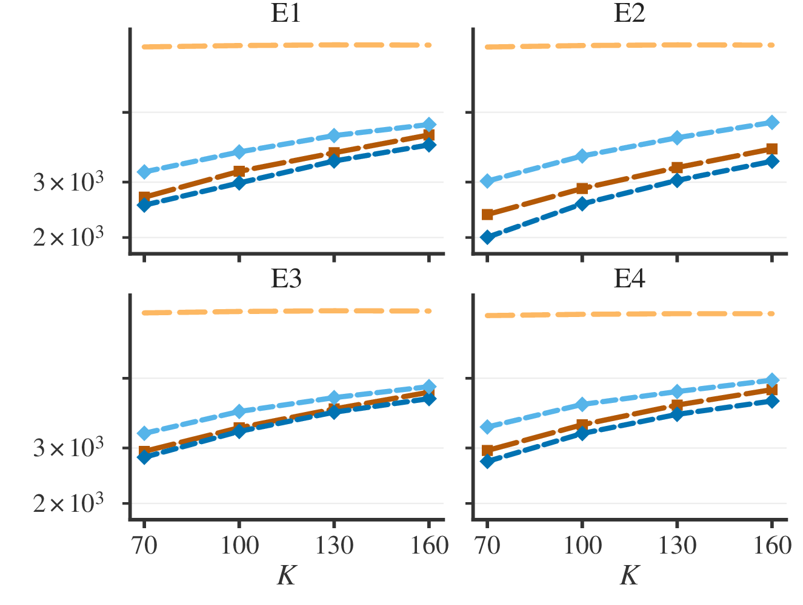
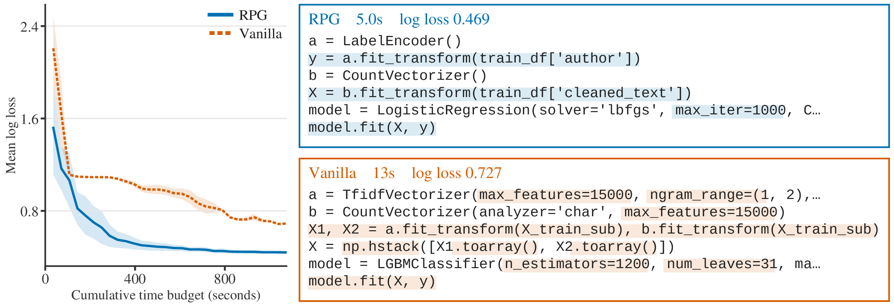
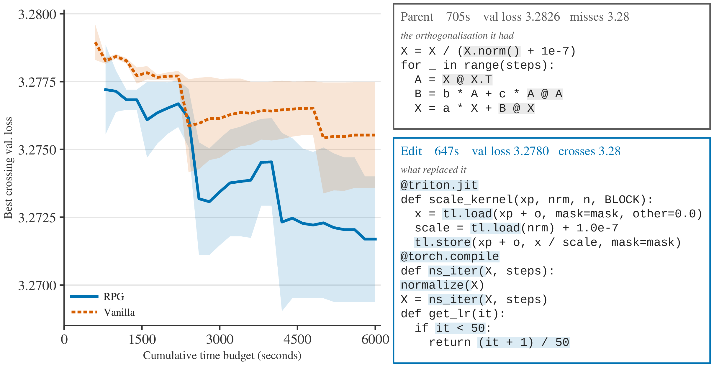

Overview of Reward-rate Policy Gradient (RPG) in machine learning engineering, where our goal is to optimize for reward per unit of time in agentic RL contexts. Our agent under policy $\pi_{\theta}$ is asked to self-improve upon its previous machine learning engineering scripts from buffer $\gB$, and each action $a$ is a proposed script that executes in variable time $\delta$ and admits a performance score $r$ such as AUC. $\hat\rho$ is estimated from past samples in buffer $\gB$ and captures the cost per unit of time. Relative reward $\tilde r$ is then used in Proximal Policy Optimization (PPO) to perform RL training. Maximizing the relative reward optimizes for reward rate, giving higher reward per unit of time and more efficient RL agents.
Traditional reinforcement learning (RL) techniques focus on maximizing expected cumulative reward, where each action assumes to take a constant unit of time. However, this assumption does not hold for agentic RL tasks such as machine learning engineering (MLE) agents, where actions involve data loading, feature engineering, and model training that take variable durations. Efficiency matters in modern agentic RL where actions are costly. To address this limitation, we adapt from continuous-time RL and Semi-Markov Decision Process (SMDP) formulation and propose Reward-rate Policy Gradient (RPG), where we focus on optimizing the reward rate — the long-term reward per unit of time. RPG estimates the reward rate from off-policy samples, then charges each action for the time it consumes at that rate. We first conduct theoretical analysis in the bandit setting to establish that RPG approximates the optimal reward rate and empirically demonstrate it outperforms baselines while avoiding enumeration over the policy space, a known issue for an existing method. We then further apply RPG on a small language model (Qwen3.5-4B) with self-improvement loops and empirically show it obtains higher rewards within a fixed time budget than vanilla RL on MLE-Bench and NanoGPT, with a 19.2% and 85.7% margin, respectively. Our method provides a practical solution for optimizing performance under wait time considerations in modern agentic RL tasks, where actions interact with external environments and cost time.
RL has been used extensively to train language models and agents, where the standard approach is to maximize expected cumulative reward. In machine learning engineering, each action takes variable time and resources, so it is important to consider samples' costs for practicality — we want agents that are not only good, but also efficient.
One natural formulation is the long-run reward per unit of time studied in the Semi-Markov Decision Process (SMDP) (Sutton et al., 1999). Intuitively, the method uses RL to maximize relative rewards, calculated from total rewards minus the amount that it would have earned if time were spent optimally. However, performing this computation requires knowing the optimal reward rate a priori, which is often not the case in practice, giving a chicken-or-egg dilemma. Directly optimizing the reward rate with the SMDP policy gradient objective (Sutton et al., 1999) requires estimating the rate of the current policy from on-policy rollouts, an operation that is still expensive when actions are costly. The continuous-time bandit approach (György et al., 2007) estimates the optimal reward rate from historical samples, but it requires an exhaustive search over the policy space, infeasible in modern agentic RL settings where action space is large.
In the SMDP setting, taking action $a_t$ in state $s_t$ gives reward $r_{t+1}$ and time $\delta_{t+1}$. Our objective is to maximize the long-term reward per unit of time:
$$\rho(\pi) = \lim_{t \to \infty} \frac{\E_\pi \big[\sum_{j=1}^{t} r_j\big]}{\E_\pi \big[\sum_{j=1}^{t} \delta_{j}\big]}, \qquad \pi^* = \arg\max_{\pi} \rho(\pi).$$RPG uses off-policy historical samples to estimate the reward rate under the greedy policy and maximizes for relative reward. It does not need time-costly on-policy rollouts for each gradient step, and does not require searching over the policy space. Additionally, RPG is simple to adopt in the current RL pipeline, since it only requires a reward-rate estimator and uses the relative reward as the learning signal. The estimator $f_\rho$ can be anything that estimates the greedy reward rate, such as Bayesian inference, Robbins-Monro iteration, or neural networks.
Require: policy $\pi_\theta$, greedy reward rate estimator $f_{\rho}$, buffer $\gB$, $\hat\rho_1 \leftarrow 0$.
For $t = 0$ to $T-1$:
$f_{\rho}$ is a Normal-Inverse-Wishart (NIW) posterior, but it can also be Robbins-Monro or neural networks.
If $\rho_{k+1}$ is within an asymmetric $\gamma$-tolerance band around the greedy reward rate $\rho(u_{\rho_k})$ at every step, the sequence is contained within an interval around the optimal reward rate $\rho_k \in [(1 - R\gamma/ (1+\gamma)) \rho^*, (1+\gamma)\rho^*]$ as $k \to \infty$ — we are approximately doing a Dinkelbach iteration (Dinkelbach, 1967). When the estimation is exact, $\gamma = 0$, the sequence reaches $\rho^*$ in finite steps.
Natural policy gradient (NPG) updates are equivalent to a Boltzmann policy on the relative value $q_{\bar\rho_{k}}(x,a)$ with a running average rate $\bar\rho_{k}$. With exact greedy reward rate estimation, the error between $\bar\rho_k$ and $\rho^*$ shrinks in $O(k^{-(1-\chi)})$, and after finitely many steps the policy increases the optimal arm's probability towards $1$. This motivates using PPO in practice, a first-order approximation of NPG (Schulman et al., 2017).

(a) 4 contexts, $|\mathcal{X}| = 4$.

(b) 64 contexts, $|\mathcal{X}| = 64$.
Our proposed approach NPG-NIW obtains similar or lower regret than C-UCB while avoiding exhaustive search over policies. Standard policy gradient (SPG-NIW) also performs worse than NPG, verifying our theory that NPG's decoupling helps reward-rate RL. y-axis is regret at the final step over 100 trials, x-axis is the number of arms $K$, and 4 environments are considered: (E1) independent reward and time, (E2) time and reward have 0.8 correlation, (E3) time and reward have $-0.8$ correlation, and (E4) reward and time are lognormal with $+0.5$ correlation. C-UCB is the continuous-time upper confidence bound approach by György et al. (2007); with 64 contexts it cannot afford to enumerate over all policies, so 2048 policies are drawn uniformly at random from past visited ones to predict $\hat\rho$.
We use Qwen3.5-4B as our language model. An action is a generated script, executed in a sandbox environment to produce time $\delta$ and reward $r$. The agent self-improves: the next state concatenates the base prompt with a previous script selected by top-$k$ relative reward $\tilde r = r' - \hat\rho\,\delta'$ from the buffer, and asks the agent to improve upon its performance score and time. The reward-rate estimator is a Normal-Inverse-Wishart posterior fitted from historical samples in the buffer. Our baseline is vanilla RL, where rewards are performance scores only. We calculate the mean reward across self-improvement chains at every cumulative time budget.
| Task | RPG | Vanilla | % improv. |
|---|---|---|---|
| ranzcr-clip (↑) | 0.089 ± 0.046 | 0.014 ± 0.014 | +530.5 |
| aptos2019 (↑) | 0.564 ± 0.046 | 0.315 ± 0.120 | +78.9 |
| mlsp-birds (↑) | 0.333 ± 0.154 | 0.226 ± 0.120 | +46.9 |
| siim-isic (↑) | 0.660 ± 0.021 | 0.456 ± 0.112 | +44.8 |
| textnorm-en (↑) | 0.880 ± 0.048 | 0.714 ± 0.068 | +23.2 |
| textnorm-ru (↑) | 0.889 ± 0.021 | 0.730 ± 0.022 | +21.7 |
| tabular-2021 (↑) | 0.907 ± 0.010 | 0.778 ± 0.046 | +16.5 |
| insults (↑) | 0.834 ± 0.025 | 0.761 ± 0.024 | +9.6 |
| jigsaw-toxic (↑) | 0.948 ± 0.009 | 0.868 ± 0.028 | +9.2 |
| histopathologic (↑) | 0.594 ± 0.107 | 0.554 ± 0.021 | +7.2 |
| aerial-cactus (↑) | 0.954 ± 0.018 | 0.893 ± 0.010 | +6.8 |
| plant-pathology (↑) | 0.526 ± 0.048 | 0.498 ± 0.047 | +5.6 |
| pizza (↑) | 0.760 ± 0.008 | 0.728 ± 0.019 | +4.4 |
| tabular-2022 (↑) | 0.840 ± 0.013 | 0.806 ± 0.028 | +4.2 |
| whale (↑) | 0.493 ± 0.005 | 0.749 ± 0.091 | −34.2 |
| leaf-classif (↓) | 0.259 ± 0.063 | 0.564 ± 0.059 | +54.0 |
| spooky-author (↓) | 0.440 ± 0.015 | 0.690 ± 0.003 | +36.2 |
| nyc-taxi (↓) | 4.309 ± 0.029 | 5.349 ± 0.387 | +19.4 |
| dog-breed (↓) | 4.786 ± 0.001 | 4.924 ± 0.139 | +2.8 |
| dogs-vs-cats (↓) | 0.688 ± 0.005 | 0.703 ± 0.001 | +2.1 |
| nomad2018 (↓) | 0.064 ± 0.002 | 0.064 ± 0.002 | +0.3 |
| denoising-docs (↓) | 0.094 ± 0.002 | 0.085 ± 0.013 | −10.1 |
RPG vs. vanilla RL on 22 MLE-Bench Lite tasks, evaluated on mean performance score across self-improving chains within a fixed-time budget. (↑) and (↓) means higher and lower is better, respectively. % improv. is the relative improvement of RPG over vanilla. On average, RPG performs 19.2% better than vanilla, after dropping the highest and lowest numbers.

Example of generated scripts by RPG and vanilla RL. RPG proposes scripts that use time more efficiently by training on one type of feature with logistic regression, whereas vanilla RL chooses to train on two types of features with 1200 gradient-boosted trees. On the spooky-author task, vanilla trains a gradient-boosted tree in 13 seconds with log loss 0.727, whereas RPG uses count features along with logistic regression to obtain 0.469 log loss in 5 seconds.
We also apply RPG to the NanoGPT speedrun challenge (Karpathy, 2022; Jordan et al., 2024), where the task is to train a tiny language model down to a validation cross-entropy loss of $3.28$ on FineWeb with eight GPUs as fast as possible. As a baseline, we implement vanilla RL using time to reach the $3.28$ target loss as reward, and compare with RPG using relative reward as the learning signal.

Budget curve and an example self-improvement step on NanoGPT. (Left) At the final budget, RPG improves over vanilla by 85.7%. (Right) Example of a self-improvement edit by RPG, which rewrites Newton–Schulz in the Muon optimizer as a triton kernel with a compiled iteration and adds a learning-rate warmup. The new edit crosses the loss target in less time.
We proposed a practical reward-rate RL algorithm, namely RPG, for training efficient machine learning engineering agents using the SMDP formulation, where each action takes variable time, and the objective is long-run reward per unit of time. RPG uses greedy policy's reward rate estimates for the relative reward calculation and directly maximizes it through PPO. It avoids enumeration over all policies and time-costly on-policy rollouts, two limitations for directly applying the SMDP methods in practice. Through theoretical analysis, simulation experiments, and empirical experiments on MLE-Bench and NanoGPT, we demonstrated that RPG produces an agent policy that learns to take actions efficiently and maximizes reward.
There are some limitations in this work. The scope of the empirical experiments is focused on machine learning engineering tasks, but other agentic RL tasks where actions cost variable time exist, so it would be interesting to see how reward-rate RL does on these tasks. Theoretically, our analysis focuses on the population-level setting in expectation. A finite-sample analysis could provide further insight.
@misc{tian2026reward,
title = {Reward-rate Policy Gradient for Efficient Machine Learning Engineering Agents},
author = {Tian, Muhang and Yang, Sherry},
year = {2026},
note = {Preprint}
}